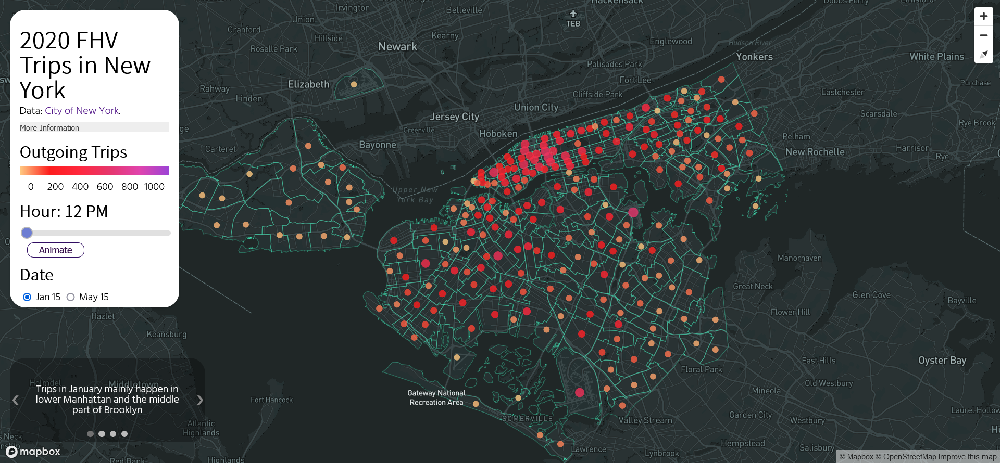
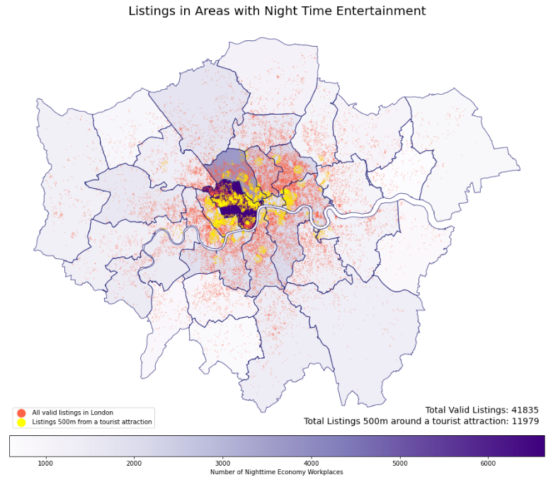

Welcome!This is a simple site about me and my works.
Data & GIS Analyst | UCL | Spatial Data Science
Welcome!This is a simple site about me and my works.
Creating interactive maps are part of my coursework in my Masters program. Main tools used are Mapbox JS or Leaflet.
Interactive features were used when more user engagement and bigger picture is needed, the New York map has a time slider that allows user to see the changes in taxi demand during the day. The leaflet map which focuses on Santander bike usage before and after COVID-19 comes with a tutorial generated using Bookdown.
Doing data analysis using Python is also part of my degree, where the scikit-learn library is most used. Previous submissions included techniques such as random forest classification, k-means, NLP and linear regression
. The geopandas and seaborn library are also my favourite when working with maps and related visualizations, sometimes GIS applications like spatial joins and reprojections are done in Python.
I picked up using Tableau back at CityU, this strong reporting tool enabled me to work with StrawberryNet and later at Urban Renewal Authority to build reporting dashboards with them.
The preparation work usually start from mining data in the SQL server, cleanse and manipulate in either Excel or R, I personally prefer using Dplyr and stringr and lastly import to Tableau for visualizations.
Apart from being a moderately bright student, I consider myself passable in these areas.
Currently polishing my R skills, occasionally brushing up some abandoned projects on my Github, dusting my photoshop skills, enjoys coffee making and DIY accessories.
A simple modded theme from HTML5Up that house some of my photography works, currently hosted on one of my Github repositries.
Hi there! Feel free to contact me!